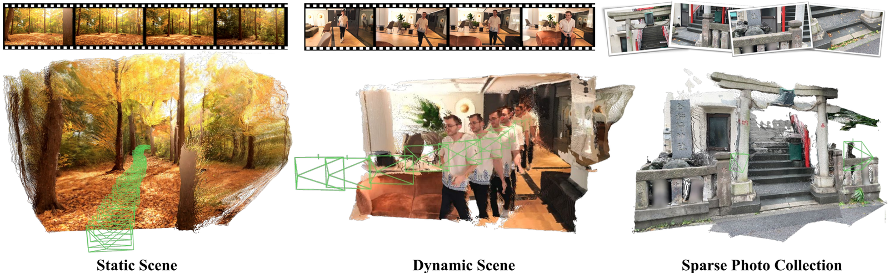

We introduce CUT3R, a unified framework for continuous 3D perception using a recurrent, stateful transformer. Given a stream of RGB images—whether video or unordered photo collections—our model incrementally updates a persistent scene state and generates metric-scale pointmaps and camera poses online. This enables dense, online 3D reconstruction without assuming static scenes or known camera parameters.
Our model leverages learned priors to handle sparse inputs, degenerate motion, and dynamic content, while supporting inference of unobserved scene regions via virtual camera queries. Unlike tabula rasa methods like SfM/SLAM or NeRF, CUT3R builds a coherent 3D world model over time. The framework is simple, general, and effective for monocular depth, pose estimation, and reconstruction tasks across diverse scenes.

![Figure 3. Method Overview . Our method performs online dense 3D reconstruction from a stream of images (video frames or a photo collection) by using a persistent state. Each input image is encoded into visual tokens via a shared-weight ViT encoder. These tokens interact with state tokens, where state update integrates the current image into the state, and state readout retrieves the past context stored in the state for predictions. Both processes occur simultaneously through two interconnected ViT decoders. Outputs include pointmaps in world and camera frames (only world pointmaps are shown) and the camera-to-world transformation. On the right, we demonstrate our method's ability to predict unseen views: given a query camera (as a raymap), it reads information from the state to predict its corresponding pointmap, even for unobserved regions. For these readouts, we do not update the state. The hallucinated pointmap is highlighted with a blue border.](assets/2501.12387v1-picture-3.png)
![Table 2. Video Depth Evaluation . We report scale-invariant depth and metric depth accuracy on Sintel, Bonn, and KITTI datasets. Methods requiring global alignment are marked 'GA', while 'Optim.' and 'Onl.' indicate optimization-based and online methods, respectively. We also report the FPS on KITTI dataset using 512 × 144 image resolution for all methods on an A100 GPU, except Spann3R which only supports 224 × 224 inputs. We present a subset of baselines here; please refer to the supplementary material for full comparisons.](assets/2501.12387v1-table-2.png)